Introduction: Plotting Marginal Effects
Daniel Lüdecke
2019-08-07
introduction_plotmethod.Rmdplot()-method
This vignettes demonstrates the plot()-method of the ggeffects-package. It is recommended to read the general introduction first, if you haven’t done this yet.
If you don’t want to write your own ggplot-code, ggeffects has a plot()-method with some convenient defaults, which allows quickly creating ggplot-objects. plot() has some arguments to tweak the plot-appearance. For instance, ci allows you to show or hide confidence bands (or error bars, for discrete variables), facets allows you to create facets even for just one grouping variable, or colors allows you to quickly choose from some color-palettes, including black & white colored plots. Use rawdata to add the raw data points to the plot.
ggeffects supports labelled data and the plot()-method automatically sets titles, axis - and legend-labels depending on the value and variable labels of the data.
library(ggeffects)
library(sjmisc)
data(efc)
efc$c172code <- to_label(efc$c172code)
fit <- lm(barthtot ~ c12hour + neg_c_7 + c161sex + c172code, data = efc)
# facet by group
dat <- ggpredict(fit, terms = c("c12hour", "c172code"))
plot(dat, facet = TRUE)

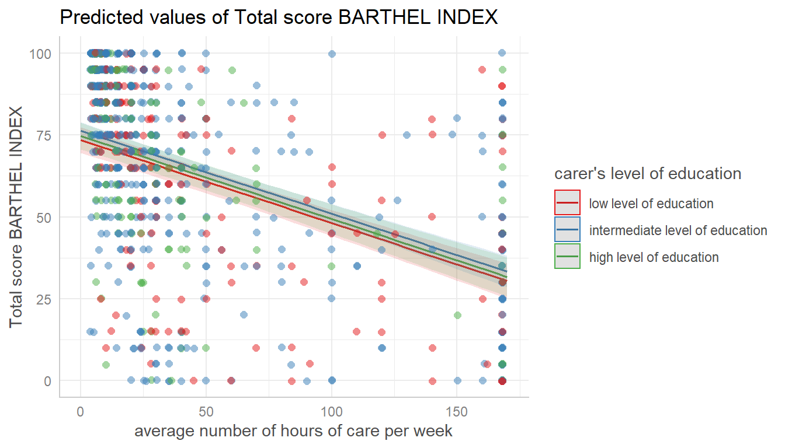
# for three variables, automatic facetting
dat <- ggpredict(fit, terms = c("c12hour", "c172code", "c161sex"))
plot(dat)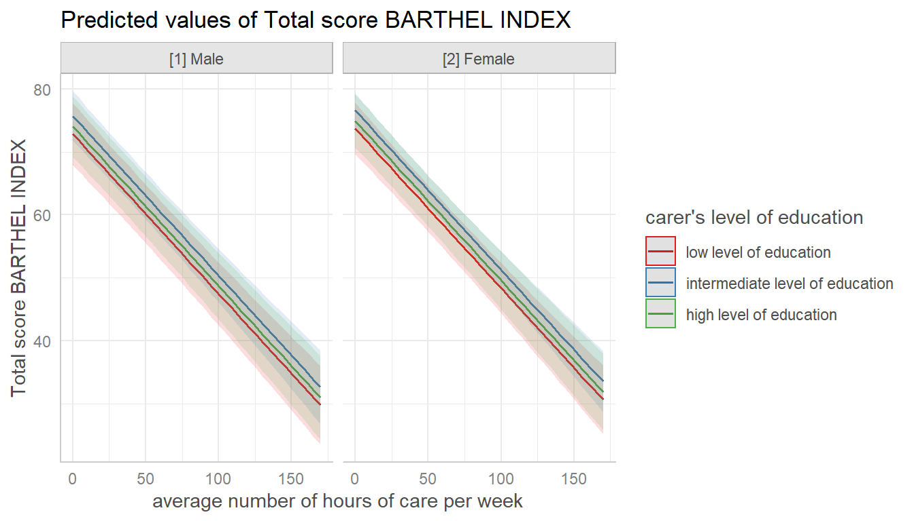
# categorical variables have errorbars
dat <- ggpredict(fit, terms = c("c172code", "c161sex"))
plot(dat)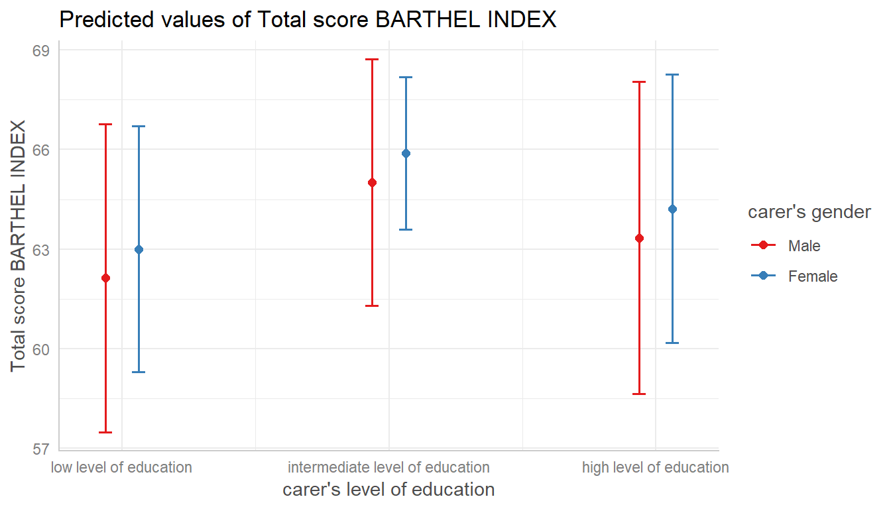
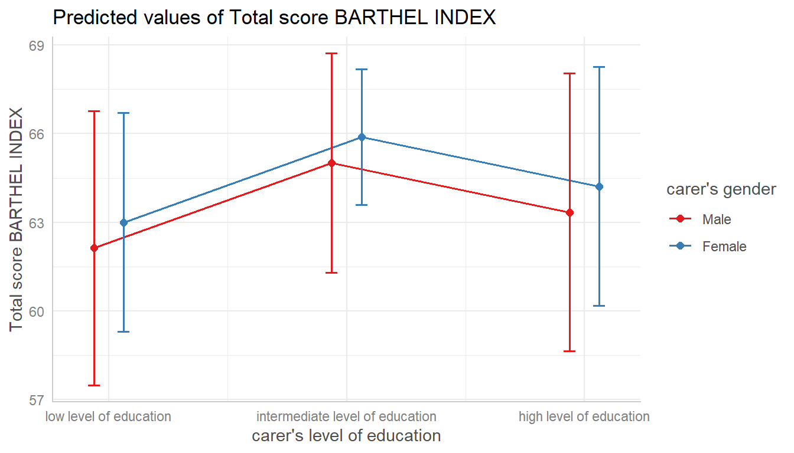
For three grouping variable (i.e. if terms is of length four), one plot per panel (the values of the fourth variable in terms) is created, and a single, integrated plot is produced by default. Use one.plot = FALSE to return one plot per panel.
# for four variables, automatic facetting and integrated panel
dat <- ggpredict(fit, terms = c("c12hour", "c172code", "c161sex", "neg_c_7"))
# use 'one.plot = FALSE' for returning multiple single plots
plot(dat, one.plot = TRUE)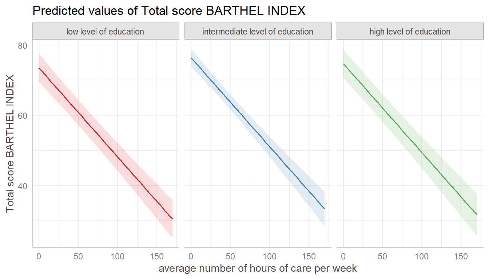
Change appearance of confidence bands
In some plots, the the confidence bands are not represented by a shaded area (ribbons), but rather by error bars (with line), dashed or dotted lines. Use ci.style = "errorbar", ci.style = "dash" or ci.style = "dot" to change the style of confidence bands.
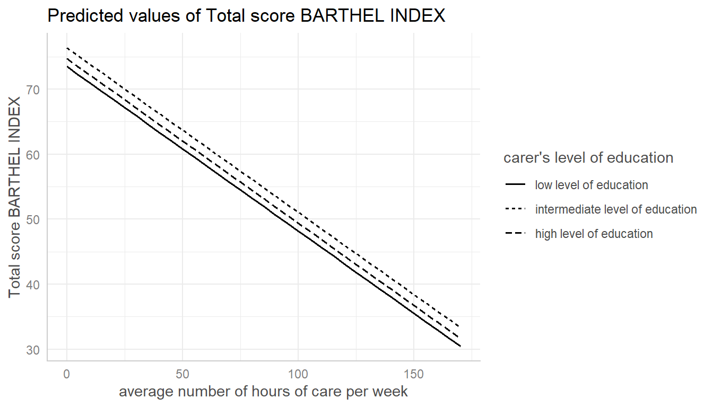
# facet by group
dat <- ggpredict(fit, terms = c("c12hour", "c172code"))
plot(dat, facet = TRUE, ci.style = "errorbar", dot.size = 1.5)
The style of error bars for plots with categorical x-axis can also be changed. By default, these are “error bars”, but ci.style = "dot" or ci.style = "dashed" works as well
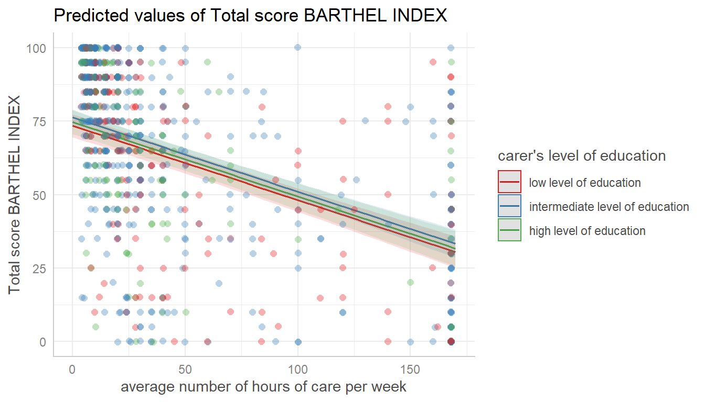
Log-transform y-axis for binomial models
For binomial models, the y-axis indicates the predicted probabilities of an event. In this case, error bars are not symmetrical.
if (requireNamespace("lme4")) {
m <- glm(
cbind(incidence, size - incidence) ~ period,
family = binomial,
data = lme4::cbpp
)
dat <- ggpredict(m, "period")
# normal plot, asymmetrical error bars
plot(dat)
}Here you can use log.y to log-transform the y-axis. The plot()-method will automatically choose axis breaks and limits that fit well to the value range and log-scale.
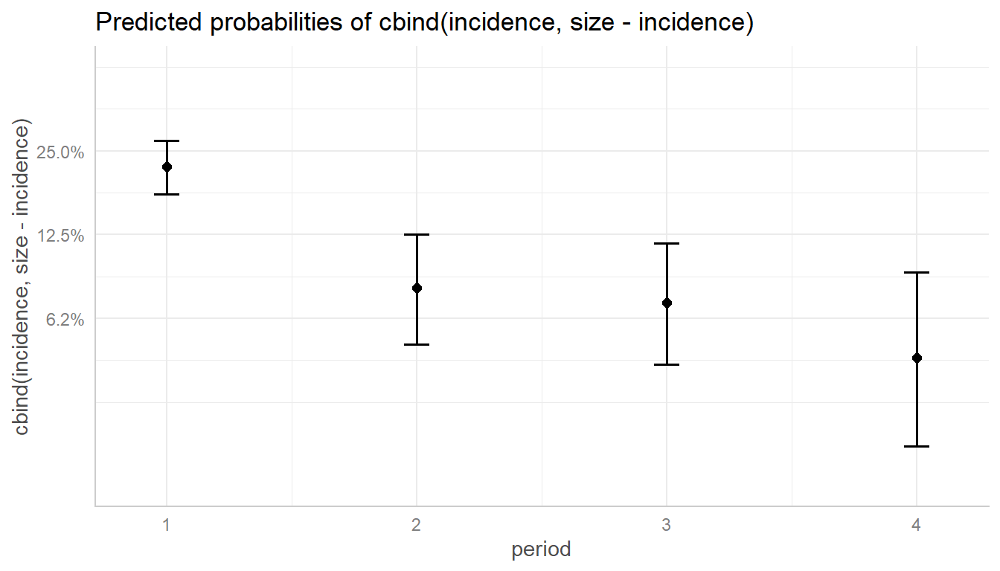
Control y-axis appearance
Furthermore, arguments in ... are passed down to ggplot::scale_y_continuous() (resp. ggplot::scale_y_log10(), if log.y = TRUE), so you can control the appearance of the y-axis.
if (requireNamespace("lme4")) {
# plot with log-transformed y-axis, modify breaks
plot(
dat, log.y = TRUE,
breaks = c(.05, .1, .15, .2, .25, .3),
limits = c(.01, .3)
)
}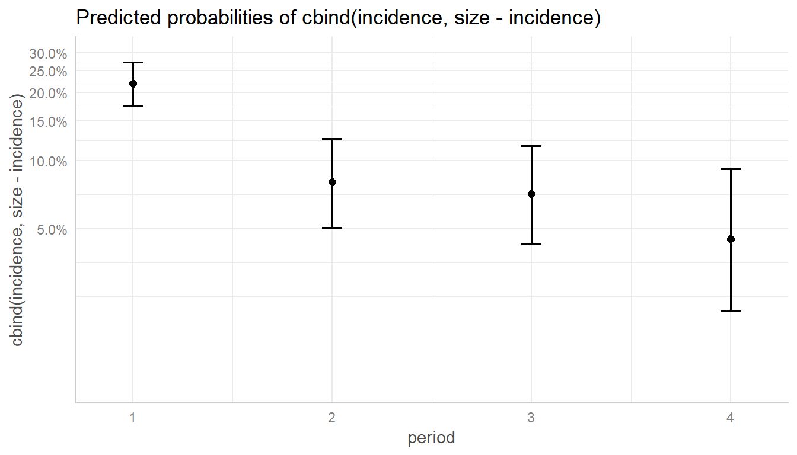
Survival models
ggpredict() also supports coxph-models from the survival-package and is able to either plot risk-scores (the default), probabilities of survival (type = "surv") or cumulative hazards (type = "cumhaz").
Since probabilities of survival and cumulative hazards are changing across time, the time-variable is automatically used as x-axis in such cases, so the terms-argument only needs up to two variables.
data("lung", package = "survival")
# remove category 3 (outlier, not nice in the plot)
lung <- subset(lung, subset = ph.ecog %in% 0:2)
lung$sex <- factor(lung$sex, labels = c("male", "female"))
lung$ph.ecog <- factor(lung$ph.ecog, labels = c("good", "ok", "limited"))
m <- survival::coxph(survival::Surv(time, status) ~ sex + age + ph.ecog, data = lung)
# predicted risk-scores
pr <- ggpredict(m, c("sex", "ph.ecog"))
plot(pr)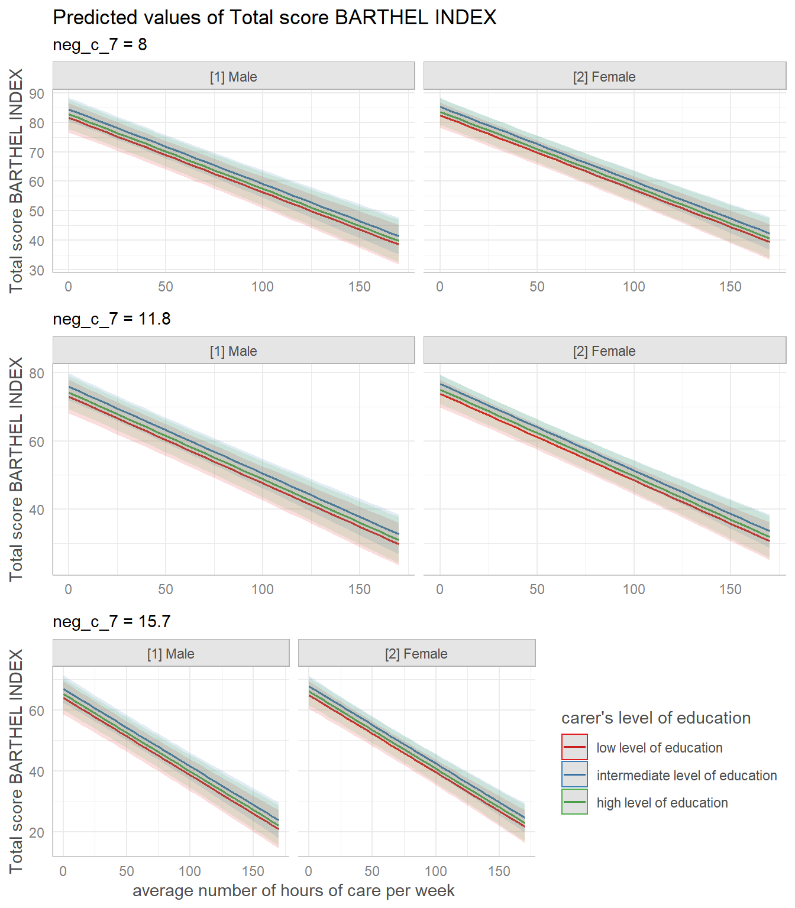
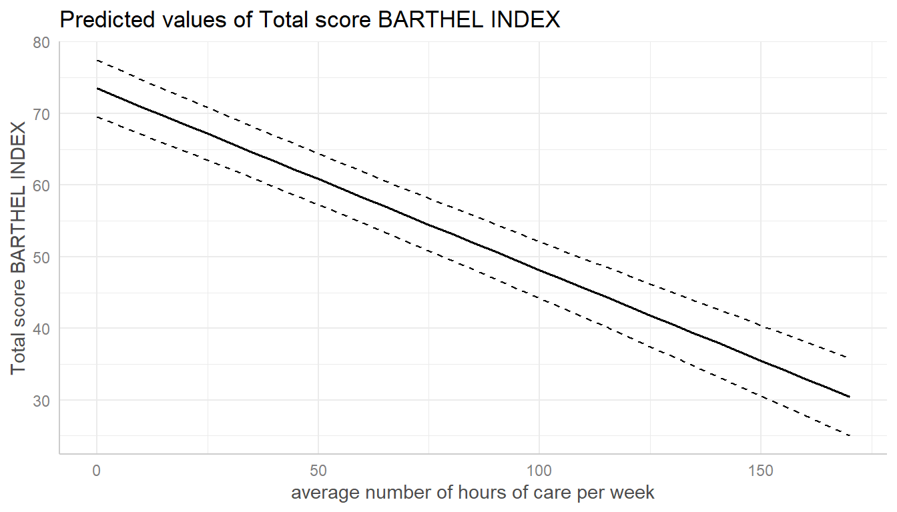
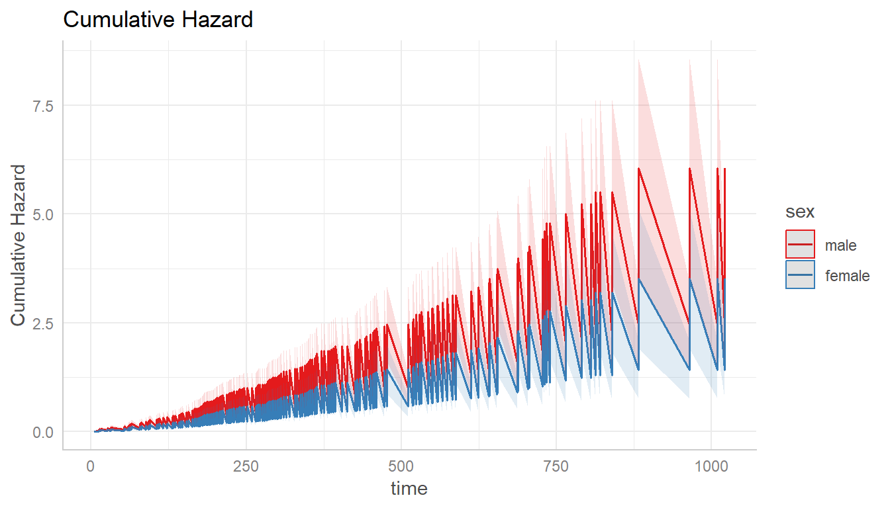
Custom color palettes
The ggeffects-package has a few pre-defined color-palettes that can be used with the colors-argument. Use show_pals() to see all available palettes.
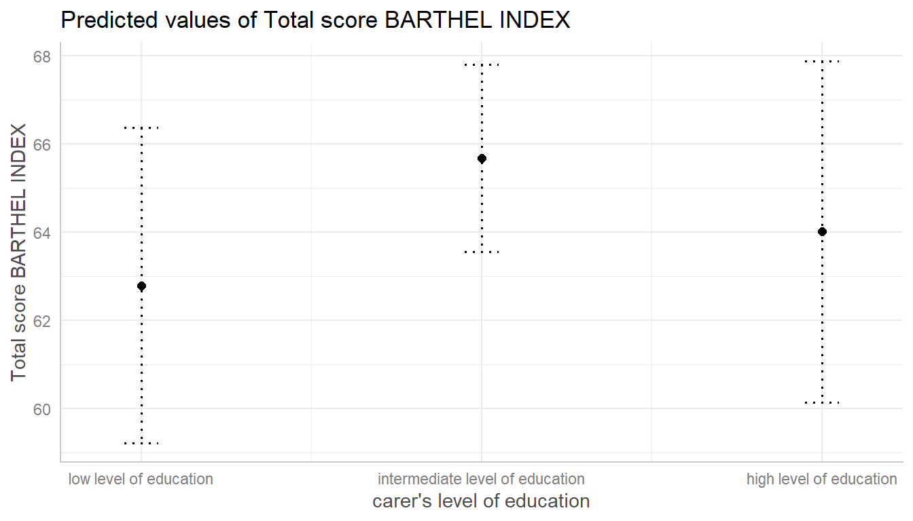
Here are two examples showing how to use pre-defined colors:
library(sjlabelled)
data(efc)
efc$c172code <- as_label(efc$c172code)
dat <- ggpredict(fit, terms = c("c12hour", "c172code"))
plot(dat, facet = TRUE, colors = "circus")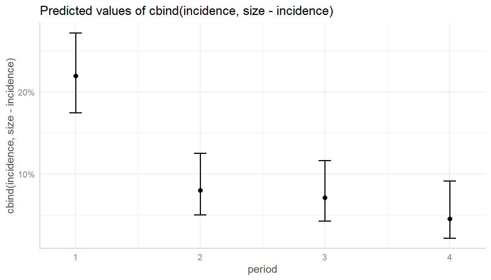
dat <- ggpredict(fit, terms = c("c172code", "c12hour [quart]"))
plot(dat, colors = "hero", dodge = 0.4) # increase space between error bars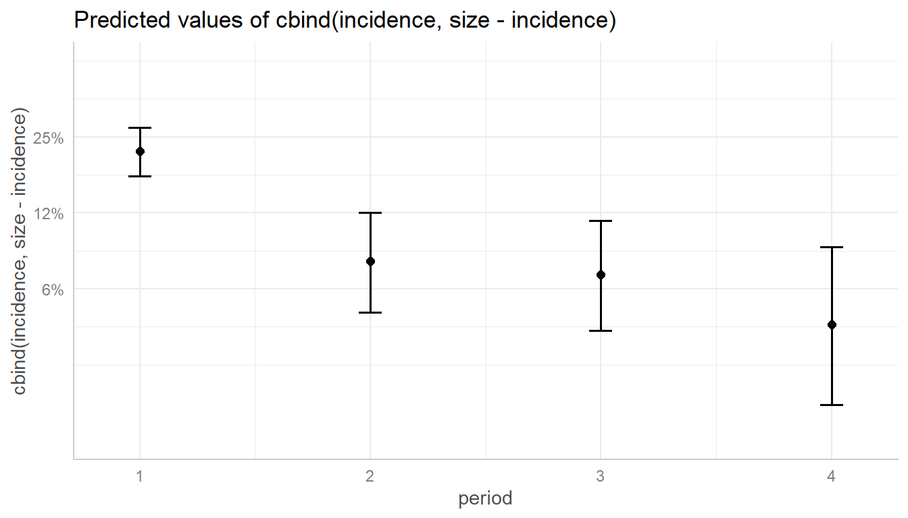